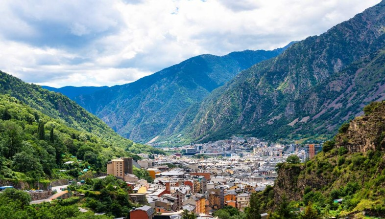
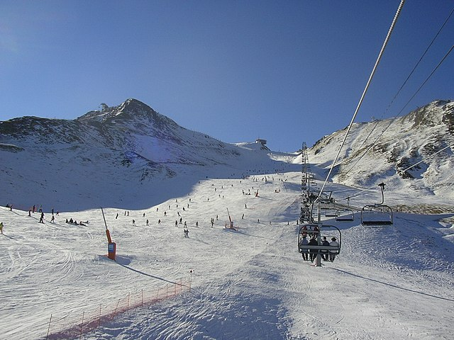
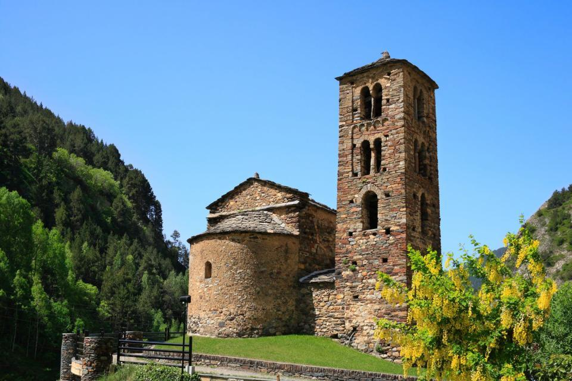
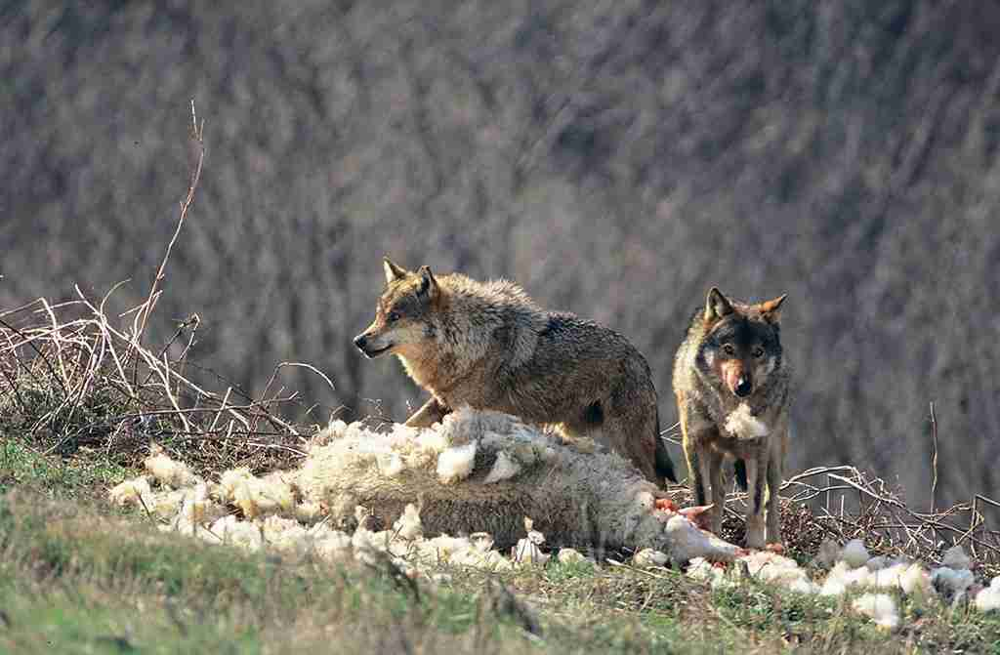

ANDORRA

Forma di governo Co-Principato parlamentare
Superficie 468 Km²Popolazione 80.500 ab.
Densità 172 ab/Km²
Capitale Andorra la Vella
Moneta Euro
Lingua Catalano (ufficiale), Spagnolo, Francese, Portoghese
Storia
Dalla preistoria all'epoca preromana, i primi abitanti di Andorra si stabilirono nel paese lasciando tracce della loro presenza in zone quali la Balma de la Margineda, il Cedre, a Santa Coloma, o El Antuix, a Escaldes-Engordany.
Secondo la leggenda fu Carlo Magno a fondare Andorra nell’anno 805, come riconoscimento per l'aiuto offertogli dai suoi abitanti durante la lotta contro i saraceni. Tuttavia, il paese è menzionato per la prima volta nell'atto di consacrazione della cattedrale di Santa María de Urgell a metà del IX secolo in cui le parrocchie di Andorra sono nominate feudi dei conti di Urgell. Dopo anni di intense battaglie tra i vicini conti e la Chiesa per il dominio di Andorra, la firma di due trattati, denominati Pareatges, pose fine alle ostilità.
I Pareatges sancirono la sovranità condivisa dei due signori sul territorio e fu così che nacque il Principato di Andorra.Con il passar del tempo, il titolo di coprincipe di Andorra passò dalla contea di Foix al re di Francia, e con la proclamazione della Repubblica Francese, al presidente della nazione. Sul versante episcopale, viene conservato nel corso dei secoli nella figura dell'arcivescovo di Urgell.

Turismo e Curiosità
La tassazione di Andorra è una delle più basse d’Europa per cui fare shopping a Andorra risulta particolarmente conveniente. Ben lo sanno francesi e spagnoli che periodicamente organizzano una gita in giornata o un weekend ad Andorra per fare rifornimenti di sigarette e alcol, ma anche abiti e prodotti di tecnologia. Questo inarrestato afflusso dei turisti ha portato a uno sviluppo del commercio e oggi la quantità di negozi e centri commerciali ad Andorra è impressionante. Quasi tutti i negozi sono concentrati nella capitale.
La carta politica di Andorra è costituita da sette divisioni amministrative, conosciute come parrocchie: Canillo, Encamp, Ordino, La Massana, Sant Julià de Lòria, Escaldes-Engordany e Andorra la Vella; proprio qui con le falles, dei grandi falò, si recupera l’attrazione atavica nei confronti del fuoco. Sono una tradizione durante la notte di San Giovanni in vari punti del paese. I cerchi infuocati che vengono fatti volteggiare ogni anno in coincidenza con il solstizio d'estate sono stati dichiarati patrimonio culturale immateriale dell'umanità dall'UNESCO.
Attrazioni
Skiing
Uno dei più grandi ski resort al mondo si trova proprio qui: si chiama Gran Valira e conta un numero impressionante di piste. L’altro complesso sciistico importante di Andorra è Vallnord. Sia Gran Valira che Vallnord sono aperti fino a tardi, dando così l’opportunità ai turisti di praticare sport e attività in notturna. Quando la neve si scioglie, l’attenzione si sposta dalle piste da sci ai prati verdi e ai sentieri che portano in alta montagna, da percorrere a piedi o in bicicletta.

Centro Termale
Per gli amanti di relax e benessere la Caldea Spa è l’ideale: un moderno tempio del benessere. Costruito sul luogo di una fonte termale naturale, è un enorme complesso spa dall’architettura contemporanea che può vantarsi d’essere la spa più grande d’Europa.
Chiese
La Vella è una graziosa città che pur essendo una delle più piccole capitali, può vantare di essere la più alta d’Europa. Un buon punto di partenza per conoscere la città e lo stato di Andorra è la caratteristica Casa de la Vall, costruita nella seconda metà del Cinquecento per una ricca famiglia locale. Usciti dall’edificio si possono esplorare le viuzze del Barri Antic, l’affascinante quartiere storico ricchissimo di palazzi storici.

Natura
Un parco divertimenti immerso nell’incantevole scenario naturale dei Pirenei che permette in una sola giornata di vivere esperienze adrenaliniche e di vedere animali selvaggi nel loro ambiente naturale: Naturlandia. Situato nella località di Sant Julià de Lòria, copre una superficie di 800 ettari, tutti all’interno di una foresta ma divisi in due aree. Potrete ammirare animali tipici della fauna locale, come lupi, orsi, linci e stambecchi.
